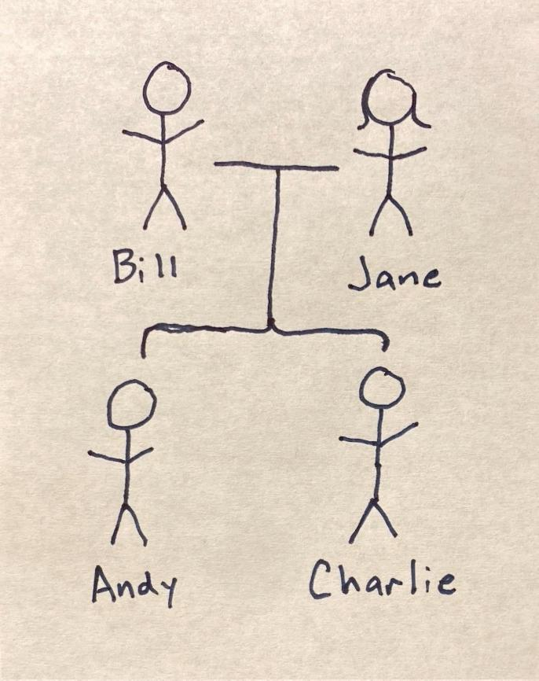

← Return to Families
William and Jane Moad Family

William Allen Moad
- Born: 6 June 1957 Evansville, Vanderburgh, Indiana, USA
- Died: Living
- Buried: St. Paul's UCC German Township
- Baptized: About 1971 Forest Hills Wesleyan Church
- Attended: Perry Heights (K-6th)
- Attended: Tekoppel Elementry School (7th-8th)
- Graduated: F.J. Reitz High School 1975
- Graduated: Ivy Tech 1984
- Graduated: IBEW Apprenticeship 1988
Jane Ellen Moad
- Born: 7 May 1957 Evansville, Vanderburgh, Indiana, USA
- Died: Living
- Buried: St. Paul's UCC German Township
- Baptized: 30 Jun 1957 St. Paul's UCC German Township
- Attended: St. Paul's UCC Kindergarten and Nursary School
- Attended: Cynthia Heights (1st-8th)
- Graduated: F.J. Reitz High School 1975
- Graduated: Indiana State University Evansville 1978
Married
- 6 August 1977
- St. Paul's UCC German Township
- Reverend Eugene Bickel
Residence
- 5538 #6 School Rd. Evansville, IN 47720 == 21 October 1978 onward
- 817 Forest Glen Dr. Evansville, IN 47712 == Aug.1977 to Oct.1978
Andrew James Moad
- Born: 12 January 1979
- Died: Living
- Buried:
- Baptized: 25 Feb 1979 St. Paul's German Township
- Graduated: F.J. Reitz High School 1997
- Married: Angela Dawn (Schneider) Moad 2000
- Graduated: Indiana University 2001
- Graduated: Purdue University 2006
Charles Walter Moad
- Born: 19 December 1981
- Died: Living
- Buried:
- Baptized: 31 Jan 1982
- Attended: Cynthia Heights Elementry School
- Attended: Helfrich Park Middle School
- Graduated: F.J. Reitz High School 2000
- Graduated: Indiana University 2004
- Married: Candice Diane (Ellis) Moad 2005
← Return to Families